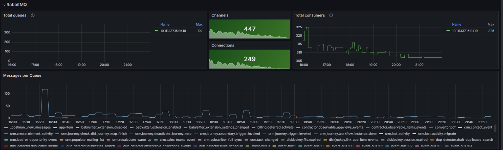

Вы можете отслеживать ключевые показатели системы в реальном времени, используя дэшборд ELMA365-Overview.
Он состоит из следующих разделов:
- ELMA365;
- ELMA365 – Telemetry;
- Kubernetes Cluster;
- Pods info;
- Nodes info;
- Postgres;
- RabbitMQ;
- MongoDB;
- Redis;
- Ingress;
- Logs;
- Linkerd;
- Kubernetes Events – Stats.
Для корректной работы дэшборда предварительно установите и настройте средства мониторинга согласно следующим статьям:
- «Установка средств мониторинга»;
- «Мониторинг баз данных»;
- «Мониторинг бизнес-процессов»;
- «Мониторинг событий»;
- «Установка Loki»;
- «Установка Linkerd» (опционально).
Рассмотрим более подробно содержание разделов дэшборда ELMA365-Overview.
Раздел «ELMA365»
В этом разделе представлены графики, показывающие состояние процессов в системе: запросы с Front API и время их обработки, запросы к Web API, а также статистика выполнения скриптов.
Если значения показателей превышают норму, следует оптимизировать скрипты.
Раздел «ELMA365 – Telemetry»
С помощью графиков в этом разделе вы увидите показатели выполнения скриптов.

Раздел «Kubernetes Cluster»
На графиках этого раздела вы увидите информацию о Kubernetes-кластере: размер базы данных etcd, количество запросов, которые поступают к API-серверу Kubernetes-кластера, и задержку запросов (latency) к etcd.

Раздел «Pods info»
На этих графиках обратите внимание на потребление CPU и памяти подов, а также на изменение статусов подов за выбранные промежутки времени.
Если наблюдается резкий рост потребления ресурсов и их нехватка, увеличьте количество ресурсов и реплик, а также лимиты для подов. Затем изучите логи сервисов, чтобы выявить возможные источники неполадок и устранить их.
Раздел «Nodes info»
В этом разделе содержится информация о состоянии кластера, включая графики, отображающие потребление CPU и памяти, среднюю нагрузку, сетевой трафик и доступное дисковое пространство на нодах. На основе этих данных можно выявить нештатные ситуации и принять меры для их устранения. Например, если нужно увеличить недостающие ресурсы, добавьте дополнительные ноды (8CPU, 16Mem).
Если вы развернули стандартный кластер Kubernetes, установите систему Linux для работы в условиях высокой нагрузки, чтобы обеспечить оптимальную производительность кластера.
В следующих разделах представлена информация о мониторинге состояния баз данных: Postgres, RabbitMQ, MongoDB и Redis.
Раздел «Postgres»
Наиболее важным графиком в этом разделе является Stat activity. Он показывает информацию по текущей активности. Если значение графика приближается к максимальному (Max Connections), увеличьте параметр max_connections.
Раздел «RabbitMQ»
Обратите внимание на график Messages per Queue. Он показывает сообщения в очереди. С его помощью можно определить, в каком микросервисе накапливаются сообщения. Если количество сообщений не уменьшается, перезагрузите соответствующий микросервис и изучите логи сервиса с помощью Loki.

Раздел «MongoDB»
На графиках в этом разделе вы можете наблюдать за показателями открытых подключений, нагрузкой на память и операциями запросов.
Для отслеживания производительности и эффективности базы данных используйте график Query Operations. С его помощью можно анализировать различные метрики, связанные с операциями запросов в MongoDB.
Раздел «Redis»
Обратите внимание на график Total Commands / sec, который отображает общее количество команд в секунду. Он служит для мониторинга производительности и эффективности кеша Redis. Также график позволяет анализировать различные метрики, связанные с исполнением команд в Redis.
Раздел «Ingress»
В этом разделе вы можете узнать оставшийся срок действия сертификатов и количество HTTP‑запросов, проходящих через Ingress.
Если на графике HTTP Error увеличилось количество ошибок, изучите логи Ingress Nginx для выявления причин.
Раздел «Logs»
Этот раздел служит для быстрого анализа логов. Вы можете выявить сервис с наибольшим количеством ошибок за указанный период и изучить логи, которые в нём зарегистрированы с помощью Loki.
Раздел «Linkerd»
Если установлен сервис Linkerd, в этом разделе можно отслеживать состояние mesh-соединений определённого deployment. Важно следить за графиком Successful rate. При возникновении проблем количество успешных подключений будет снижаться. В этом случае проанализируйте работу Linkerd, включая проверку внутреннего сертификата и анализ логов сервиса.
На представленном графике зафиксирован момент снижения производительности. При этом возникло предупреждение: level=warning msg="unable to parse quantity's suffix (config.linkerd.io/proxy-memory-limit)". В этом случае проверьте конфигурационный файл Linkerd и исправьте ошибки в параметрах requests и limits.
Раздел «Kubernetes Events – Stats»
С помощью графиков в этом разделе можно отслеживать различные события в кластере и получать информацию о состоянии подов.
События, связанные с подами (Containers):
- Image Pull Failed — невозможно скачать образ контейнера для запуска пода, например, если недоступен контейнерный регистр или отсутствует запрашиваемый образ;
- Liveness Probe Failed — это событие появляется, если нарушена связь между подом и liveness probe, с помощью которого проверяется корректность работы пода;
- Volume Mount Failed — не удаётся смонтировать постоянный том (volume) или ресурс хранения. Такое поведение может возникнуть, если неправильно настроено хранилище либо есть проблемы с сетью или разрешениями;
- Container OOM Killed — под завершил работу из-за нехватки памяти. Событие появляется, если под потребляет слишком много памяти и узел не может обеспечить требуемые ресурсы;
- Container Crashed — аварийная остановка контейнера. Причиной может быть ошибка внутри контейнера или его некорректная работа;
- Pod Evicted — под удалён из-за нехватки памяти или CPU. Событие появляется, если перегружается узел или под потребляет большое количество ресурсов.
События, связанные с планированием (Scheduling):
- Scheduling Failed — это событие происходит, когда планировщик Kubernetes не может разместить под на узле из-за нехватки ресурсов или других ограничений.
События, связанные с системой (System):
- System OOM — это событие фиксируется, когда не хватает памяти на системном уровне, например из-за высокой нагрузки на узел или недостаточных системных ресурсов.